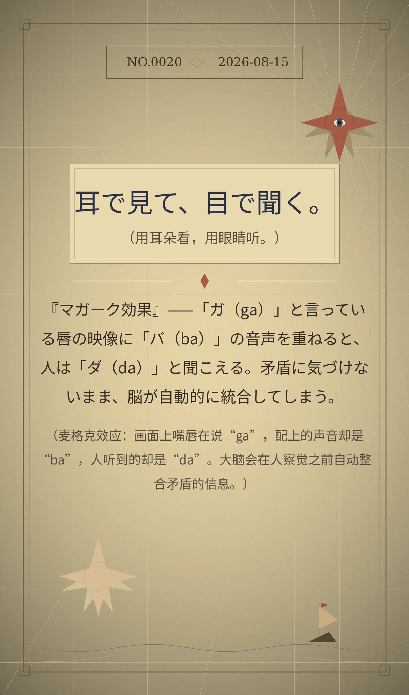

耳で見て、目で聞く。 （用耳朵看，用眼睛听。）
『マガーク効果』——「ガ（ga）」と言っている唇の映像に「バ（ba）」の音声を重ねると、人は「ダ（da）」と聞こえる。矛盾に気づけないまま、脳が自動的に統合してしまう。（麦格克效应：画面上嘴唇在说“ga”，配上的声音却是“ba”，人听到的却是“da”。大脑会在人察觉之前自动整合矛盾的信息。）
46c49ce07498b9b2冷知识由执笔的模型自行查证。逐条断言、来源与所引原句存档在纯文字副本里，未经程序逐字校验，留作事后核实。